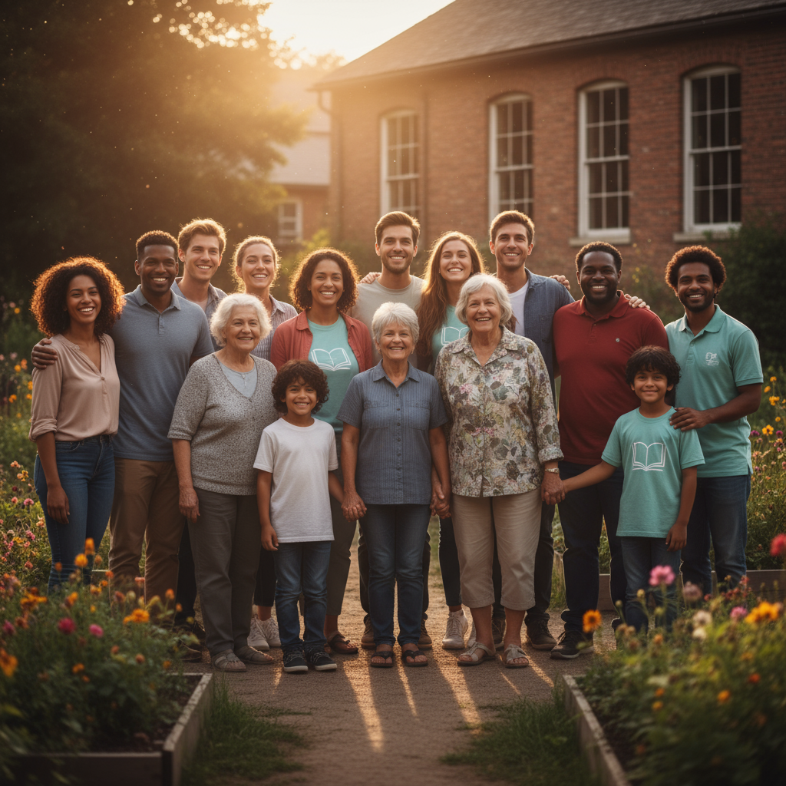

لماذا تأسست أمجاد؟
تأسست أمجاد استجابة لحاجة محلية إلى إطار منظم يجمع بين التربية والعمل الاجتماعي، ويحول نية الخير إلى برامج قابلة للتنفيذ والتوثيق والتطوير.
رؤية ورسالة وأهداف نسعى لتحقيقها في خدمة المجتمع
جمعية أمجاد للتربية والأعمال الاجتماعية إطار مدني يشتغل على التربية، التضامن، الصحة، والتنمية المحلية، من خلال مبادرات ميدانية تخدم ساكنة الصخيرات ومحيطها بروح تطوعية ومسؤولة.

تأسست أمجاد استجابة لحاجة محلية إلى إطار منظم يجمع بين التربية والعمل الاجتماعي، ويحول نية الخير إلى برامج قابلة للتنفيذ والتوثيق والتطوير.
مجتمع محلي متضامن، متعلم، ومشارك في صناعة أثر إيجابي مستدام.
تنظيم مبادرات تربوية واجتماعية وصحية بشراكة مع المتطوعين والمؤسسات لخدمة الإنسان وتقوية الروابط المجتمعية.
نخدم الناس بروح التكافل والمسؤولية.
نعتبر التعلم مدخلاً للتنمية والثقة.
نوثق المبادرات ونوضح مجالات الدعم.
نشتغل مع المتطوعين والمؤسسات والفاعلين المحليين.
تبلورت فكرة العمل الجمعوي حول التربية والتضامن وخدمة القرب.
تم ترتيب المبادرات ضمن برنامج تربوي وتكويني وبرنامج اجتماعي وتضامني.
فتح قنوات التعاون مع المتطوعين والمؤسسات والفاعلين المحليين.
تطوير الموقع ليصبح واجهة رسمية للأخبار والبرامج والذاكرة المحلية.
يعتمد عمل الجمعية على مكتب منظم ومتطوعين ومؤطرين وشركاء يساهمون كل حسب خبرته ووقته وإمكاناته.
يمكنك الانضمام كمتطوع، دعم برنامج محدد، أو اقتراح شراكة تخدم التربية والعمل الاجتماعي بالصخيرات ومحيطها.